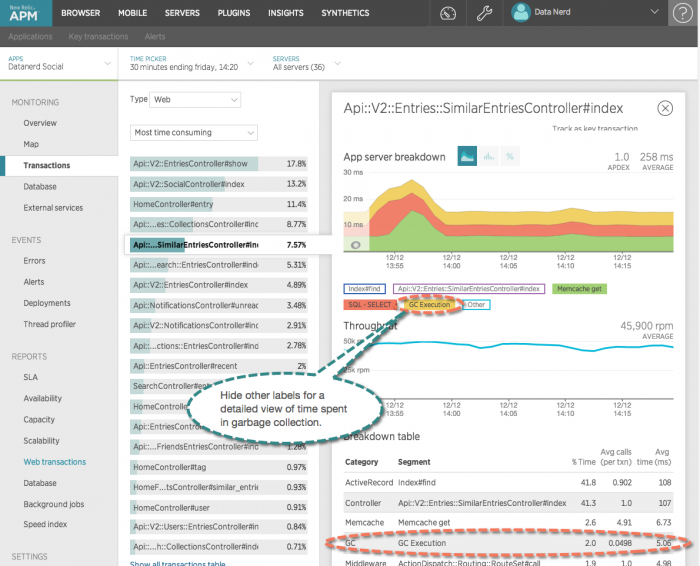

Garbage collection (GC) finds unused data objects and reclaims that memory space for use by another process. The New Relic Ruby agent can collect information about how much time is spent in garbage collection for applications running on MRI 1.9.2 or higher or Ruby Enterprise Edition, but you must explicitly enable this feature in your application.
Avoid using garbage collection in production for long periods of time, as it increases overhead.
To activate the feature, add the appropriate call in your application initialization.
GC::Profiler.enableGC.enable_statsFor Rails applications, you can either add this call to an initializer in config/initializers, or add it directly to your config/application.rb file.
To view overall garbage collection statistics:
one.newrelic.com > APM > (select a Ruby app) > Summary: On the Web transactions time chart, garbage collection statistics are labeled GC Execution.
To view garbage collection metrics on a per-transaction basis, go to one.newrelic.com > APM > (select a Ruby app) > Transactions > (select a transaction). You can then view the amount of time spent in GC, and the average number of times GC is called for each transaction.

one.newrelic.com > APM > (select a Ruby app) > Transactions > (select a transaction): Select an individual transaction to view detailed GC metrics, including average time and average number of calls.
Detailed information includes:
Garbage collection details
Comments
Trend of garbage collection time
Garbage collection usually takes a small amount of time, and therefore the trend line may not be visible in your charts. To view the trend in garbage collection time, navigate to the overview chart or to detailed transaction metrics. Then, hide every chart label except GC Execution by selecting each label.
Average number of calls
To view the average number of garbage collection calls for each controller action: From your APM Summary page, select Transaction. Then select a controller action and view the App Server Breakdown.
Additional documentation resources include: